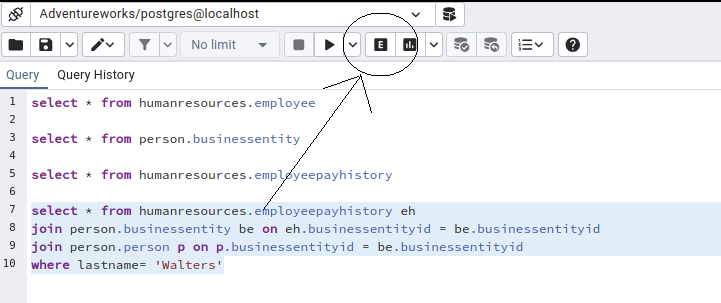
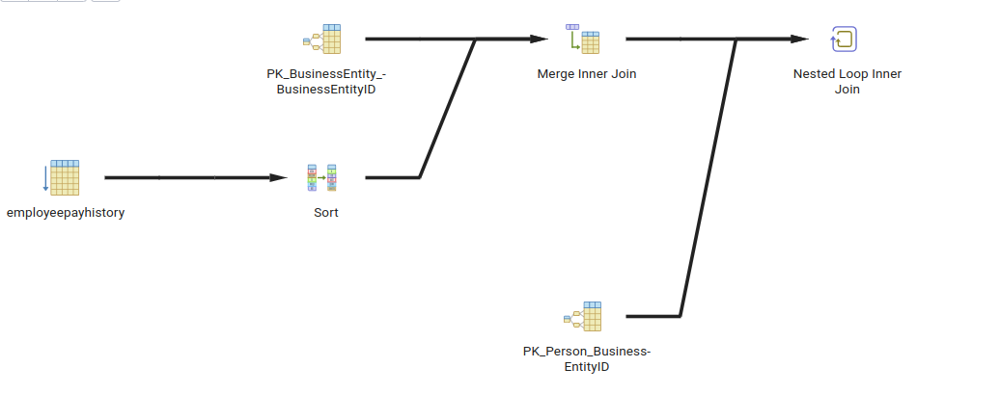
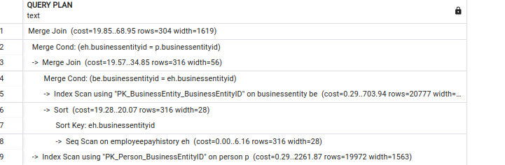

let's consider following query:
select * from humanresources.employeepayhistory eh
join person.businessentity be on eh.businessentityid = be.businessentityid
join person.person p on p.businessentityid = be.businessentityid
where lastname= 'Walters'
There are multiple ways for execting this query but if we want to see which way does postgres choose we have 2 options
in pgadmin you can use button with following shape to see execution diagram

here is diagram of upper query
another way of doing this job is through explain keyword. you should put Explain before your query to see how potgresql execute the query. here is an example from the output of upper query
the first step is query rewrite(for example replacing view with its query) after that we have following steps:
Plans may vary in
formally speaking, the optimizer finds the best plan by computing the costs for all possible plans and then comparing the costs. But since we know that there are three basic algorithms to execute each join, even a simple SELECT on three tables can generate nine possible execution plans; given the 12 possible join orders, there are 108 possible plans(3*3*12=108). If we then consider all the potential data retrieval methods for each table, there are several thousand plans to compare. Fortunately, PostgreSQL does not check every possible plan. The cost-based optimization algorithm relies on the optimality principle: a sub-plan of an optimal plan is optimal for the corresponding subquery. A plan can be considered a composition of multiple component pieces, or sub-plans. A sub-plan is a plan that includes any operations of the original plan as a root node and all its descendant nodes, that is, all operations that contribute to the input arguments for the operation chosen as a root of the sub-plan. The optimizer builds the optimal plan starting from the smallest sub-plans
The cost of each execution plan depends on